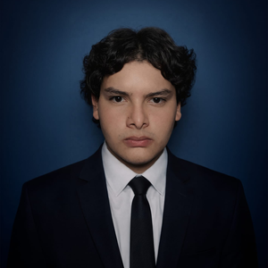
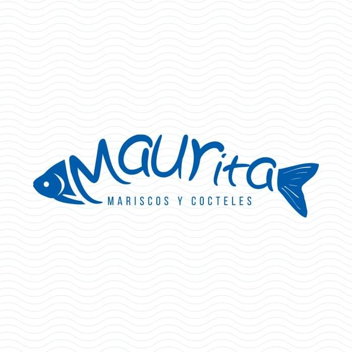

Bryan Misael Sánchez Ramírez
Construyo soluciones eficientes con C# y ASP.NET Core, con experiencia en un sistema real de gestión de inventarios y distribución.

- C#
- ASP.NET Core MVC
- SQL Server
- Entity Framework
- Java
- Bootstrap
- Git
Perfil
Estudiante de Ingeniería en Desarrollo de Software (UES) con base práctica en C#, .NET y bases de datos, y experiencia trabajando de forma colaborativa. He realizado proyectos personales con ASP.NET MVC y Entity Framework, y cuento con disposición para aprender y adaptarme a cualquier tecnología que el equipo o proyecto requiera.
Formación técnica
Bachillerato técnico y técnico en ingeniería de desarrollo de software.
Experiencia en equipo
Prácticas profesionales en Manceja S.A. de C.V. (Restaurantes Maurita) durante 2023 y 2024.
Plataforma .NET
C#, ASP.NET Core MVC, Entity Framework y SQL Server como base de trabajo.
Trayectoria
-
Ingeniería en Desarrollo de Software (2º año)
Universidad de El Salvador (UES), El Salvador
Formación universitaria en curso, complementando mi base técnica en desarrollo de software.
-
Programador .NET Jr
Restaurantes MAURITA · Manceja S.A. de C.V. · Prácticas profesionales
Participé en el desarrollo de un sistema de control de inventarios para el Almacén Central de la empresa, usado en la operación diaria del negocio. Colaboré con el equipo en la implementación de funcionalidades usando C#, ASP.NET MVC y Entity Framework, con interfaz en Bootstrap/CSS y base de datos SQL Server. Trabajé en equipo aplicando control de versiones con Git durante el proyecto.
-
Técnico en Ingeniería de Desarrollo de Software
Escuela Superior Franciscana Especializada ESFE AGAPE, El Salvador · Becado
Estudios realizados con una beca, que me permitieron perfeccionar mis habilidades como programador.
-
Bachillerato Técnico en Desarrollo de Software
Instituto Nacional de Ciudad Arce (INCA), El Salvador
Desarrollé mis bases de programación creando pequeños proyectos y di mis primeros pasos como desarrollador.

Sistema de inventario y distribución
Sistema de control de inventarios para el Almacén Central de Restaurantes MAURITA, usado en la operación diaria del negocio. Implementado con C#, ASP.NET MVC y Entity Framework, con interfaz en Bootstrap/CSS y base de datos SQL Server.
- C#
- ASP.NET MVC
- Entity Framework
- Bootstrap
- SQL Server
- Git
El código es privado por políticas de confidencialidad de la empresa.
Visitar sitio de MAURITAHabilidades
Lenguajes
- C#
- Java
Frameworks / Tecnologías
- ASP.NET Core
- .NET
- MVC
- Entity Framework
- Bootstrap
Bases de datos
- SQL Server (intermedio)
- Oracle (básico)
- PostgreSQL (básico)
Herramientas y prácticas
- Git
- GitHub
- SCRUM
- Docker (básico)
- Linux (básico)
Idiomas
Español
- Nativo
Inglés
- Básico
Trabajemos juntos
Si tienes una oportunidad o un proyecto en mente, escríbeme.
softwaremisael@gmail.comCiudad Arce, La Libertad, El Salvador